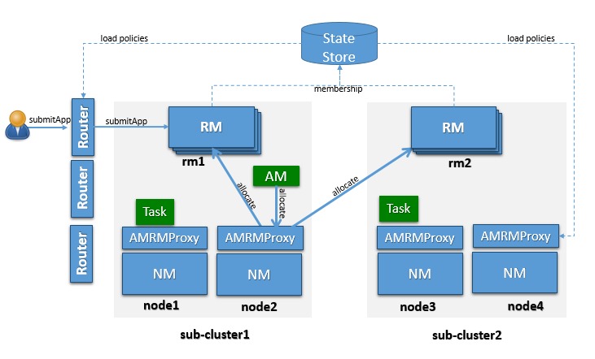

YARN is known to scale to thousands of nodes. The scalability of YARN is determined by the Resource Manager, and is proportional to number of nodes, active applications, active containers, and frequency of heartbeat (of both nodes and applications). Lowering heartbeat can provide scalability increase, but is detrimental to utilization (see old Hadoop 1.x experience). This document described a federation-based approach to scale a single YARN cluster to tens of thousands of nodes, by federating multiple YARN sub-clusters. The proposed approach is to divide a large (10-100k nodes) cluster into smaller units called sub-clusters, each with its own YARN RM and compute nodes. The federation system will stitch these sub-clusters together and make them appear as one large YARN cluster to the applications. The applications running in this federated environment will see a single massive YARN cluster and will be able to schedule tasks on any node of the federated cluster. Under the hood, the federation system will negotiate with sub-clusters resource managers and provide resources to the application. The goal is to allow an individual job to “span” sub-clusters seamlessly.
This design is structurally scalable, as we bound the number of nodes each RM is responsible for, and appropriate policies, will try to ensure that the majority of applications will reside within a single sub-cluster, thus the number of applications each RM will see is also bounded. This means we could almost linearly scale, by simply adding sub-clusters (as very little coordination is needed across them). This architecture can provide very tight enforcement of scheduling invariants within each sub-cluster (simply inherits from YARN), while continuous rebalancing across subcluster will enforce (less strictly) that these properties are also respected at a global level (e.g., if a sub-cluster loses a large number of nodes, we could re-map queues to other sub-clusters to ensure users running on the impaired sub-cluster are not unfairly affected).
Federation is designed as a “layer” atop of existing YARN codebase, with limited changes in the core YARN mechanisms.
Assumptions:
OSS YARN has been known to scale up to about few thousand nodes. The proposed architecture leverages the notion of federating a number of such smaller YARN clusters, referred to as sub-clusters, into a larger federated YARN cluster comprising of tens of thousands of nodes. The applications running in this federated environment see a unified large YARN cluster and will be able to schedule tasks on any nodes in the cluster. Under the hood, the federation system will negotiate with sub-clusters RMs and provide resources to the application. The logical architecture in Figure 1 shows the main components that comprise the federated cluster, which are described below.

A sub-cluster is a YARN cluster with up to few thousands nodes. The exact size of the sub-cluster will be determined considering ease of deployment/maintenance, alignment with network or availability zones and general best practices.
The sub-cluster YARN RM will run with work-preserving high-availability turned-on, i.e., we should be able to tolerate YARN RM, NM failures with minimal disruption. If the entire sub-cluster is compromised, external mechanisms will ensure that jobs are resubmitted in a separate sub-cluster (this could eventually be included in the federation design).
Sub-cluster is also the scalability unit in a federated environment. We can scale out the federated environment by adding one or more sub-clusters.
Note: by design each sub-cluster is a fully functional YARN RM, and its contribution to the federation can be set to be only a fraction of its overall capacity, i.e. a sub-cluster can have a “partial” commitment to the federation, while retaining the ability to give out part of its capacity in a completely local way.
YARN applications are submitted to one of the Routers, which in turn applies a routing policy (obtained from the Policy Store), queries the State Store for the sub-cluster URL and redirects the application submission request to the appropriate sub-cluster RM. We call the sub-cluster where the job is started the “home sub-cluster”, and we call “secondary sub-clusters” all other sub-cluster a job is spanning on. The Router exposes the ApplicationClientProtocol to the outside world, transparently hiding the presence of multiple RMs. To achieve this the Router also persists the mapping between the application and its home sub-cluster into the State Store. This allows Routers to be soft-state while supporting user requests cheaply, as any Router can recover this application to home sub-cluster mapping and direct requests to the right RM without broadcasting them. For performance caching and session stickiness might be advisable. The state of the federation (including applications and nodes) is exposed through the Web UI.
The AMRMProxy is a key component to allow the application to scale and run across sub-clusters. The AMRMProxy runs on all the NM machines and acts as a proxy to the YARN RM for the AMs by implementing the ApplicationMasterProtocol. Applications will not be allowed to communicate with the sub-cluster RMs directly. They are forced by the system to connect only to the AMRMProxy endpoint, which would provide transparent access to multiple YARN RMs (by dynamically routing/splitting/merging the communications). At any one time, a job can span across one home sub-cluster and multiple secondary sub-clusters, but the policies operating in the AMRMProxy try to limit the footprint of each job to minimize overhead on the scheduling infrastructure (more in section on scalability/load). The interceptor chain architecture of the ARMMProxy is showing in figure.

Role of AMRMProxy
Global Policy Generator overlooks the entire federation and ensures that the system is configured and tuned properly all the time. A key design point is that the cluster availability does not depends on an always-on GPG. The GPG operates continuously but out-of-band from all cluster operations, and provide us with a unique vantage point, that allows to enforce global invariants, affect load balancing, trigger draining of sub-clusters that will undergo maintenance, etc. More precisely the GPG will update user capacity allocation-to-subcluster mappings, and more rarely change the policies that run in Routers, AMRMProxy (and possible RMs).
In case the GPG is not-available, cluster operations will continue as of the last time the GPG published policies, and while a long-term unavailability might mean some of the desirable properties of balance, optimal cluster utilization and global invariants might drift away, compute and access to data will not be compromised.
NOTE: In the current implementation the GPG is a manual tuning process, simply exposed via a CLI (YARN-3657).
This part of the federation system is part of future work in YARN-5597.
The Federation State defines the additional state that needs to be maintained to loosely couple multiple individual sub-clusters into a single large federated cluster. This includes the following information:
The member YARN RMs continuously heartbeat to the state store to keep alive and publish their current capability/load information. This information is used by the Global Policy Generator (GPG) to make proper policy decisions. Also this information can be used by routers to select the best home sub-cluster. This mechanism allows us to dynamically grow/shrink the “cluster fleet” by adding or removing sub-clusters. This also allows for easy maintenance of each sub-cluster. This is new functionality that needs to be added to the YARN RM but the mechanisms are well understood as it’s similar to individual YARN RM HA.
The sub-cluster on which the Application Master (AM) runs is called the Application’s “home sub-cluster”. The AM is not limited to resources from the home sub-cluster but can also request resources from other sub-clusters, referred to as secondary sub-clusters. The federated environment will be configured and tuned periodically such that when an AM is placed on a sub-cluster, it should be able to find most of the resources on the home sub-cluster. Only in certain cases it should need to ask for resources from other sub-clusters.
The federation Policy Store is a logically separate store (while it might be backed by the same physical component), which contains information about how applications and resource requests are routed to different sub-clusters. The current implementation provides several policies, ranging from random/hashing/roundrobin/priority to more sophisticated ones which account for sub-cluster load, and request locality needs.
When an application is submitted, the system will determine the most appropriate sub-cluster to run the application, which we call as the application’s home sub-cluster. All the communications from the AM to the RM will be proxied via the AMRMProxy running locally on the AM machine. AMRMProxy exposes the same ApplicationMasterService protocol endpoint as the YARN RM. The AM can request containers using the locality information exposed by the storage layer. In ideal case, the application will be placed on a sub-cluster where all the resources and data required by the application will be available, but if it does need containers on nodes in other sub-clusters, AMRMProxy will negotiate with the RMs of those sub-clusters transparently and provide the resources to the application, thereby enabling the application to view the entire federated environment as one massive YARN cluster. AMRMProxy, Global Policy Generator (GPG) and Router work together to make this happen seamlessly.

The figure shows a sequence diagram for the following job execution flow:
To configure the YARN to use the Federation, set the following property in the conf/yarn-site.xml:
These are common configurations that should appear in the conf/yarn-site.xml at each machine in the federation.
| Property | Example | Description |
|---|---|---|
| yarn.federation.enabled | true | Whether federation is enabled or not |
| yarn.resourcemanager.cluster-id | <unique-subcluster-id> | The unique subcluster identifier for this RM (same as the one used for HA). |
Currently, we support ZooKeeper and SQL based implementations of the state-store.
Note: The State-Store implementation must always be overwritten with one of the below.
ZooKeeper: one must set the ZooKeeper settings for Hadoop:
| Property | Example | Description |
|---|---|---|
| yarn.federation.state-store.class | org.apache.hadoop.yarn.server.federation.store.impl.ZookeeperFederationStateStore | The type of state-store to use. |
| hadoop.zk.address | host:port | The address for the ZooKeeper ensemble. |
SQL: one must setup the following parameters:
| Property | Example | Description |
|---|---|---|
| yarn.federation.state-store.class | org.apache.hadoop.yarn.server.federation.store.impl.SQLFederationStateStore | The type of state-store to use. |
| yarn.federation.state-store.sql.url | jdbc:mysql://<host>:<port>/FederationStateStore | For SQLFederationStateStore the name of the DB where the state is stored. |
| yarn.federation.state-store.sql.jdbc-class | com.mysql.jdbc.jdbc2.optional.MysqlDataSource | For SQLFederationStateStore the jdbc class to use. |
| yarn.federation.state-store.sql.username | <dbuser> | For SQLFederationStateStore the username for the DB connection. |
| yarn.federation.state-store.sql.password | <dbpass> | For SQLFederationStateStore the password for the DB connection. |
We provide scripts for MySQL and Microsoft SQL Server.
For MySQL, one must download the latest jar version 5.x from MVN Repository and add it to the CLASSPATH. Then the DB schema is created by executing the following SQL scripts in the database:
In the same directory we provide scripts to drop the Stored Procedures, the Tables, the User and the Database.
Note: the FederationStateStoreUser.sql defines a default user/password for the DB that you are highly encouraged to set this to a proper strong password.
For SQL-Server, the process is similar, but the jdbc driver is already included. SQL-Server scripts are located in sbin/FederationStateStore/SQLServer/.
| Property | Example | Description |
|---|---|---|
| yarn.federation.failover.enabled | true | Whether should retry considering RM failover within each subcluster. |
| yarn.federation.blacklist-subclusters | <subcluster-id> | A list of black-listed sub-clusters, useful to disable a sub-cluster |
| yarn.federation.policy-manager | org.apache.hadoop.yarn.server.federation.policies.manager.WeightedLocalityPolicyManager | The choice of policy manager determines how Applications and ResourceRequests are routed through the system. |
| yarn.federation.policy-manager-params | <binary> | The payload that configures the policy. In our example a set of weights for router and amrmproxy policies. This is typically generated by serializing a policymanager that has been configured programmatically, or by populating the state-store with the .json serialized form of it. |
| yarn.federation.subcluster-resolver.class | org.apache.hadoop.yarn.server.federation.resolver.DefaultSubClusterResolverImpl | The class used to resolve which subcluster a node belongs to, and which subcluster(s) a rack belongs to. |
| yarn.federation.machine-list | node1,subcluster1,rack1\n node2 , subcluster2, RACK1\n node3,subcluster3, rack2\n node4, subcluster3, rack2\n | a list of Nodes, Sub-clusters, Rack, used by the DefaultSubClusterResolverImpl |
These are extra configurations that should appear in the conf/yarn-site.xml at each ResourceManager.
| Property | Example | Description |
|---|---|---|
| yarn.resourcemanager.epoch | <unique-epoch> | The seed value for the epoch. This is used to guarantee uniqueness of container-IDs generate by different RMs. It must therefore be unique among sub-clusters and well-spaced to allow for failures which increment epoch. Increments of 1000 allow for a large number of sub-clusters and |
| practically ensure near-zero chance of collisions (a clash will only happen if a container is still alive for 1000 restarts of one RM, while the next RM never restarted, and an app requests more containers). |
Optional:
| Property | Example | Description |
|---|---|---|
| yarn.federation.state-store.heartbeat-interval-secs | 60 | The rate at which RMs report their membership to the federation to the central state-store. |
These are extra configurations that should appear in the conf/yarn-site.xml at each Router.
| Property | Example | Description |
|---|---|---|
| yarn.router.bind-host | 0.0.0.0 | Host IP to bind the router to. The actual address the server will bind to. If this optional address is set, the RPC and webapp servers will bind to this address and the port specified in yarn.router.*.address respectively. This is most useful for making Router listen to all interfaces by setting to 0.0.0.0. |
| yarn.router.clientrm.interceptor-class.pipeline | org.apache.hadoop.yarn.server.router.clientrm.FederationClientInterceptor | A comma-seperated list of interceptor classes to be run at the router when interfacing with the client. The last step of this pipeline must be the Federation Client Interceptor. |
Optional:
| Property | Example | Description |
|---|---|---|
| yarn.router.hostname | 0.0.0.0 | Router host name. |
| yarn.router.clientrm.address | 0.0.0.0:8050 | Router client address. |
| yarn.router.webapp.address | 0.0.0.0:8089 | Webapp address at the router. |
| yarn.router.admin.address | 0.0.0.0:8052 | Admin address at the router. |
| yarn.router.webapp.https.address | 0.0.0.0:8091 | Secure webapp address at the router. |
| yarn.router.submit.retry | 3 | The number of retries in the router before we give up. |
| yarn.federation.statestore.max-connections | 10 | This is the maximum number of parallel connections each Router makes to the state-store. |
| yarn.federation.cache-ttl.secs | 60 | The Router caches informations, and this is the time to leave before the cache is invalidated. |
| yarn.router.webapp.interceptor-class.pipeline | org.apache.hadoop.yarn.server.router.webapp.FederationInterceptorREST | A comma-seperated list of interceptor classes to be run at the router when interfacing with the client via REST interface. The last step of this pipeline must be the Federation Interceptor REST. |
These are extra configurations that should appear in the conf/yarn-site.xml at each NodeManager.
| Property | Example | Description |
|---|---|---|
| yarn.nodemanager.amrmproxy.enabled | true | Whether or not the AMRMProxy is enabled. |
| yarn.nodemanager.amrmproxy.interceptor-class.pipeline | org.apache.hadoop.yarn.server.nodemanager.amrmproxy.FederationInterceptor | A comma-separated list of interceptors to be run at the amrmproxy. For federation the last step in the pipeline should be the FederationInterceptor. |
| yarn.client.failover-proxy-provider | org.apache.hadoop.yarn.server.federation.failover.FederationRMFailoverProxyProvider | The class used to connect to the RMs by looking up the membership information in federation state-store. This must be set if federation is enabled, even if RM HA is not enabled. |
Optional:
| Property | Example | Description |
|---|---|---|
| yarn.nodemanager.amrmproxy.ha.enable | true | Whether or not the AMRMProxy HA is enabled for multiple application attempt suppport. |
| yarn.federation.statestore.max-connections | 1 | The maximum number of parallel connections from each AMRMProxy to the state-store. This value is typically lower than the router one, since we have many AMRMProxy that could burn-through many DB connections quickly. |
| yarn.federation.cache-ttl.secs | 300 | The time to leave for the AMRMProxy cache. Typically larger than at the router, as the number of AMRMProxy is large, and we want to limit the load to the centralized state-store. |
In order to submit jobs to a Federation cluster one must create a seperate set of configs for the client from which jobs will be submitted. In these, the conf/yarn-site.xml should have the following additional configurations:
| Property | Example | Description |
|---|---|---|
| yarn.resourcemanager.address | <router_host>:8050 | Redirects jobs launched at the client to the router’s client RM port. |
| yarn.resourcemanger.scheduler.address | localhost:8049 | Redirects jobs to the federation AMRMProxy port. |
Any YARN jobs for the cluster can be submitted from the client configurations described above. In order to launch a job through federation, first start up all the clusters involved in the federation as described here. Next, start up the router on the router machine with the following command:
$HADOOP_HOME/bin/yarn --daemon start router
Now with $HADOOP_CONF_DIR pointing to the client configurations folder that is described above, run your job the usual way. The configurations in the client configurations folder described above will direct the job to the router’s client RM port where the router should be listening after being started. Here is an example run of a Pi job on a federation cluster from the client:
$HADOOP_HOME/bin/yarn jar hadoop-mapreduce-examples-3.0.0.jar pi 16 1000
This job is submitted to the router which as described above, uses a generated policy from the GPG to pick a home RM for the job to which it is submitted.
The output from this particular example job should be something like:
2017-07-13 16:29:25,055 INFO mapreduce.Job: Job job_1499988226739_0001 running in uber mode : false 2017-07-13 16:29:25,056 INFO mapreduce.Job: map 0% reduce 0% 2017-07-13 16:29:33,131 INFO mapreduce.Job: map 38% reduce 0% 2017-07-13 16:29:39,176 INFO mapreduce.Job: map 75% reduce 0% 2017-07-13 16:29:45,217 INFO mapreduce.Job: map 94% reduce 0% 2017-07-13 16:29:46,228 INFO mapreduce.Job: map 100% reduce 100% 2017-07-13 16:29:46,235 INFO mapreduce.Job: Job job_1499988226739_0001 completed successfully . . . Job Finished in 30.586 seconds Estimated value of Pi is 3.14250000......
The state of the job can also be tracked on the Router Web UI at routerhost:8089. Note that no change in the code or recompilation of the input jar was required to use federation. Also, the output of this job is the exact same as it would be when run without federation. Also, in order to get the full benefit of federation, use a large enough number of mappers such that more than one cluster is required. That number happens to be 16 in the case of the above example.